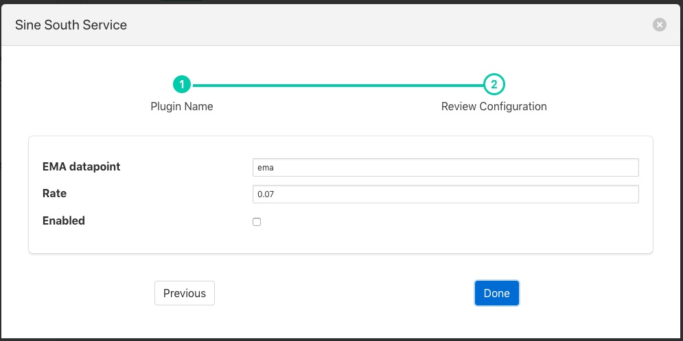

Exponential Moving Average¶
The foglamp-filter-ema plugin implements an exponential moving average across a set of data. It also forms an example of how to write a filter plugin purely in Python. Filters written in Python have the same functionality and set of entry points as any other filter.
The plugin_info entry point that returns details of the plugin and the default configuration
def plugin_info():
""" Returns information about the plugin
Args:
Returns:
dict: plugin information
Raises:
"""
return {
'name': 'ema',
'version': '1.8.0',
'mode': "none",
'type': 'filter',
'interface': '1.0',
'config': _DEFAULT_CONFIG
}
The plugin_init entry point that initialises the plugin
def plugin_init(config, ingest_ref, callback):
""" Initialise the plugin
Args:
config: JSON configuration document for the Filter plugin configuration category
ingest_ref:
callback:
Returns:
data: JSON object to be used in future calls to the plugin
...
return data
The plugin_reconfigure entry point that us called whenever the configuration is changed
def plugin_reconfigure(handle, new_config):
""" Reconfigures the plugin
Args:
handle: handle returned by the plugin initialisation call
new_config: JSON object representing the new configuration category for the category
Returns:
new_handle: new handle to be used in the future calls
"""
global rate, datapoint
...
return new_handle
The plugin_shutdown entry point called to terminate the plugin
def plugin_shutdown(handle):
""" Shutdowns the plugin doing required cleanup.
Args:
handle: handle returned by the plugin initialisation call
Returns:
plugin shutdown
"""
And the plugin_ingest call that is called to do the actual data processing
def plugin_ingest(handle, data):
""" Modify readings data and pass it onward
Args:
handle: handle returned by the plugin initialisation call
data: readings data
"""
Python filters are added in the same way as any other filters.
- Click on the Applications add icon for your service or task.
- Select the ema plugin from the list of available plugins.
- Name your ema filter.
- Click Next and you will be presented with the following configuration page
|  |
- Configure your ema filter
- EMA datapoint: The name of the data point to create within the asset
- Rate: The rate controls the rate of the average generated, in this case it is the percentage the current value contribute to the average value.
- Enable your plugin and click Done